Lecture 15: Class demo#
Let’s cluster images!!

For this demo, I’m going to use the following image dataset:
A tiny subset of Food-101 from last lecture (available here).
A small subset of Human Faces dataset (available here).
To run the code below, you need to install pytorch and torchvision in the course conda environment.
conda install pytorch torchvision -c pytorch
import os
import random
import sys
import time
import numpy as np
import pandas as pd
sys.path.append(os.path.join(os.path.abspath(".."), (".."), "code"))
from plotting_functions_unsup import *
import torch
import torchvision
from torchvision import datasets, models, transforms, utils
from PIL import Image
import matplotlib.pyplot as plt
import random
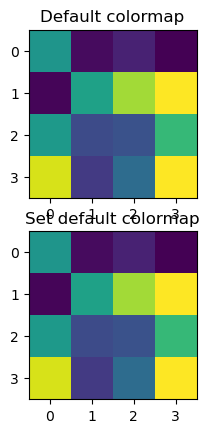
#device = torch.device("cuda" if torch.cuda.is_available() else "cpu")
device = torch.device('mps' if torch.backends.mps.is_available() else 'cpu')
device
device(type='mps')
def set_seed(seed=42):
torch.manual_seed(seed)
np.random.seed(seed)
random.seed(seed)
set_seed(seed=42)
import glob
IMAGE_SIZE = 224
def read_img_dataset(data_dir):
data_transforms = transforms.Compose(
[
transforms.Resize((IMAGE_SIZE, IMAGE_SIZE)),
transforms.ToTensor(),
transforms.Normalize([0.5, 0.5, 0.5], [0.5, 0.5, 0.5]),
])
image_dataset = datasets.ImageFolder(root=data_dir, transform=data_transforms)
dataloader = torch.utils.data.DataLoader(
image_dataset, batch_size=BATCH_SIZE, shuffle=True, num_workers=0
)
dataset_size = len(image_dataset)
class_names = image_dataset.classes
inputs, classes = next(iter(dataloader))
return inputs, classes
def plot_sample_imgs(inputs):
plt.figure(figsize=(10, 70)); plt.axis("off"); plt.title("Sample Training Images")
plt.imshow(np.transpose(utils.make_grid(inputs, padding=1, normalize=True),(1, 2, 0)));
def get_features(model, inputs):
"""Extract output of densenet model"""
model.eval()
with torch.no_grad(): # turn off computational graph stuff
Z = model(inputs).detach().numpy()
return Z
densenet = models.densenet121(weights="DenseNet121_Weights.IMAGENET1K_V1")
densenet.classifier = torch.nn.Identity() # remove that last "classification" layer
data_dir = "../../data/food"
file_names = [image_file for image_file in glob.glob(data_dir + "/*/*.jpg")]
n_images = len(file_names)
BATCH_SIZE = n_images # because our dataset is quite small
food_inputs, food_classes = read_img_dataset(data_dir)
n_images
350
X_food = food_inputs.numpy()
plot_sample_imgs(food_inputs[0:24,:,:,:])
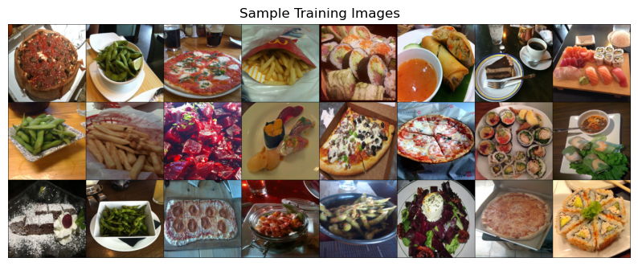
Z_food = get_features(
densenet, food_inputs,
)
Z_food.shape
(350, 1024)
from sklearn.cluster import KMeans
k = 5
km = KMeans(n_clusters=k, n_init='auto', random_state=123)
km.fit(Z_food)
KMeans(n_clusters=5, random_state=123)In a Jupyter environment, please rerun this cell to show the HTML representation or trust the notebook.
On GitHub, the HTML representation is unable to render, please try loading this page with nbviewer.org.
KMeans(n_clusters=5, random_state=123)
km.cluster_centers_.shape
(5, 1024)
for cluster in range(k):
get_cluster_images(km, Z_food, X_food, cluster, n_img=6)
244
Image indices: [244 249 214 273 171 327]
48
Image indices: [ 48 191 265 334 343 138]
76
Image indices: [ 76 138 313 61 190 48]
274
Image indices: [274 203 89 330 209 205]
124
Image indices: [124 27 25 253 280 223]
DBSCAN#
dbscan = DBSCAN()
labels = dbscan.fit_predict(Z_food)
print("Unique labels: {}".format(np.unique(labels)))
Unique labels: [-1]
It identified all points as noise points. Let’s explore the distances between points.
from sklearn.metrics.pairwise import euclidean_distances
dists = euclidean_distances(Z_food)
np.fill_diagonal(dists, np.inf)
dists_df = pd.DataFrame(dists)
dists_df
| 0 | 1 | 2 | 3 | 4 | 5 | 6 | 7 | 8 | 9 | ... | 340 | 341 | 342 | 343 | 344 | 345 | 346 | 347 | 348 | 349 | |
|---|---|---|---|---|---|---|---|---|---|---|---|---|---|---|---|---|---|---|---|---|---|
| 0 | inf | 27.170071 | 23.031963 | 29.344770 | 27.464485 | 25.905249 | 28.601198 | 27.226374 | 27.482910 | 27.221531 | ... | 27.895405 | 28.627741 | 28.157877 | 24.296236 | 27.864172 | 26.458879 | 28.636688 | 23.513239 | 26.565344 | 27.202259 |
| 1 | 27.170071 | inf | 22.623034 | 24.378839 | 25.491880 | 21.179726 | 25.291134 | 22.400309 | 17.118835 | 23.523659 | ... | 22.605665 | 19.422024 | 22.297949 | 20.873529 | 24.695156 | 23.107458 | 21.258495 | 19.471357 | 20.257633 | 22.101439 |
| 2 | 23.031963 | 22.623034 | inf | 28.764124 | 25.544821 | 23.159750 | 26.158792 | 23.423162 | 23.352556 | 25.552364 | ... | 26.763525 | 25.627256 | 27.411240 | 22.771511 | 24.695322 | 25.684532 | 26.029633 | 20.417009 | 21.786682 | 22.903080 |
| 3 | 29.344770 | 24.378839 | 28.764124 | inf | 28.520519 | 23.345842 | 28.131287 | 27.448313 | 24.425112 | 19.679516 | ... | 22.209080 | 26.940434 | 26.980894 | 25.166636 | 27.609039 | 21.547804 | 26.480219 | 24.750483 | 25.170492 | 26.520855 |
| 4 | 27.464485 | 25.491880 | 25.544821 | 28.520519 | inf | 21.172096 | 26.477964 | 23.458084 | 24.881807 | 26.123215 | ... | 26.482233 | 24.862644 | 26.194008 | 22.634832 | 26.464815 | 25.304211 | 25.343542 | 23.945749 | 23.584101 | 25.460316 |
| ... | ... | ... | ... | ... | ... | ... | ... | ... | ... | ... | ... | ... | ... | ... | ... | ... | ... | ... | ... | ... | ... |
| 345 | 26.458879 | 23.107458 | 25.684532 | 21.547804 | 25.304211 | 22.533875 | 26.831314 | 24.927710 | 22.792894 | 21.153376 | ... | 20.873131 | 24.183716 | 25.783266 | 23.444523 | 25.757412 | inf | 24.095852 | 22.627153 | 24.188885 | 24.653475 |
| 346 | 28.636688 | 21.258495 | 26.029633 | 26.480219 | 25.343542 | 21.611742 | 26.205795 | 25.979353 | 20.662205 | 23.817640 | ... | 22.648527 | 21.091988 | 21.743132 | 23.498381 | 27.345236 | 24.095852 | inf | 22.860329 | 24.492994 | 25.513124 |
| 347 | 23.513239 | 19.471357 | 20.417009 | 24.750483 | 23.945749 | 19.392572 | 23.914520 | 22.881351 | 20.868397 | 23.173370 | ... | 23.511862 | 23.249804 | 23.443993 | 17.126707 | 22.055302 | 22.627153 | 22.860329 | inf | 18.786024 | 18.716599 |
| 348 | 26.565344 | 20.257633 | 21.786682 | 25.170492 | 23.584101 | 19.035461 | 22.507225 | 21.890001 | 18.954798 | 24.086985 | ... | 24.703289 | 22.101406 | 23.019146 | 18.728836 | 22.244556 | 24.188885 | 24.492994 | 18.786024 | inf | 22.293304 |
| 349 | 27.202259 | 22.101439 | 22.903080 | 26.520855 | 25.460316 | 21.709145 | 24.901802 | 24.091793 | 23.649513 | 25.744673 | ... | 26.223894 | 25.669897 | 25.911024 | 18.624897 | 25.121590 | 24.653475 | 25.513124 | 18.716599 | 22.293304 | inf |
350 rows × 350 columns
dists.min(), np.nanmax(dists[dists != np.inf]), np.mean(dists[dists != np.inf])
(10.06717, 36.652683, 24.538565)
for eps in range(13, 20):
print("\neps={}".format(eps))
dbscan = DBSCAN(eps=eps, min_samples=3)
labels = dbscan.fit_predict(Z_food)
print("Number of clusters: {}".format(len(np.unique(labels))))
print("Cluster sizes: {}".format(np.bincount(labels + 1)))
eps=13
Number of clusters: 2
Cluster sizes: [347 3]
eps=14
Number of clusters: 5
Cluster sizes: [334 3 6 4 3]
eps=15
Number of clusters: 4
Cluster sizes: [299 26 8 17]
eps=16
Number of clusters: 4
Cluster sizes: [248 86 3 13]
eps=17
Number of clusters: 2
Cluster sizes: [205 145]
eps=18
Number of clusters: 2
Cluster sizes: [160 190]
eps=19
Number of clusters: 2
Cluster sizes: [116 234]
dbscan = DBSCAN(eps=14, min_samples=3)
dbscan_labels = dbscan.fit_predict(Z_food)
print("Number of clusters: {}".format(len(np.unique(dbscan_labels))))
print("Cluster sizes: {}".format(np.bincount(dbscan_labels + 1)))
print("Unique labels: {}".format(np.unique(dbscan_labels)))
Number of clusters: 5
Cluster sizes: [334 3 6 4 3]
Unique labels: [-1 0 1 2 3]
print_dbscan_clusters(Z_food, food_inputs, dbscan_labels)
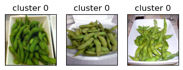
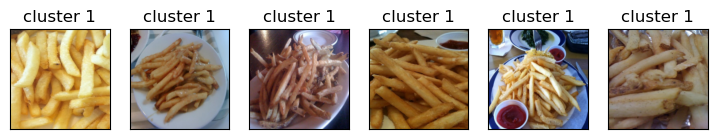
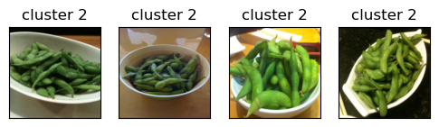
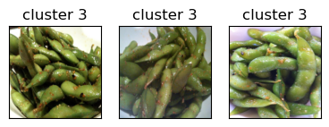
Let’s examine noise points identified by DBSCAN.
print_dbscan_noise_images(Z_food, food_inputs, dbscan_labels)
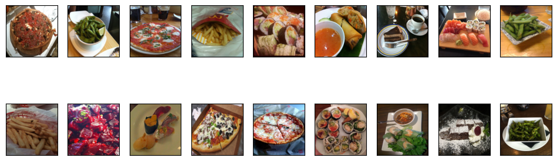
Hierarchical clustering#
set_seed(seed=42)
plt.figure(figsize=(20, 15))
Z_hrch = ward(Z_food)
dendrogram(Z_hrch, p=7, truncate_mode="level", no_labels=True)
plt.xlabel("Sample index")
plt.ylabel("Cluster distance");
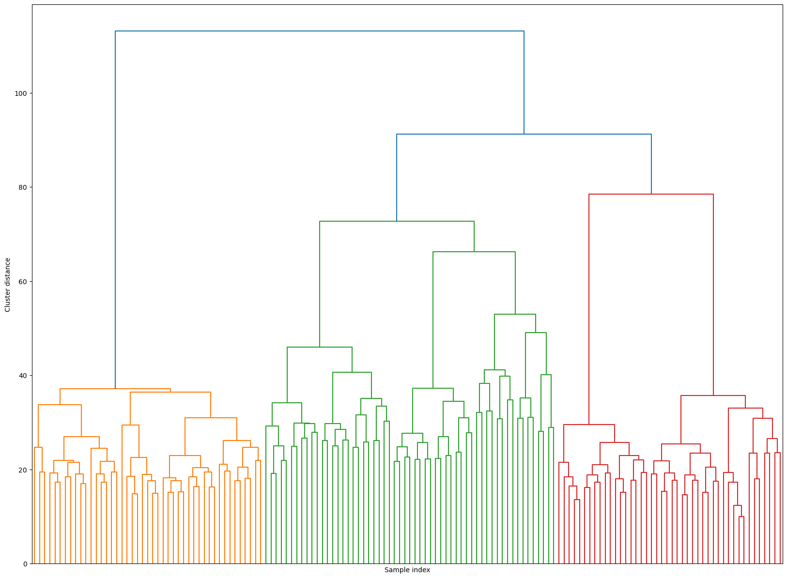
cluster_labels = fcluster(Z_hrch, 20, criterion="maxclust") # let's get flat clusters
hand_picked_clusters = np.arange(2, 20)
#hand_picked_clusters = [2, 3, 5, 6,7, 8, 9, 10, 12, 14,15,16,17,19,20, 21,22, 24, 26, 27, 28]
print_hierarchical_clusters(
food_inputs, Z_food, cluster_labels, hand_picked_clusters
)
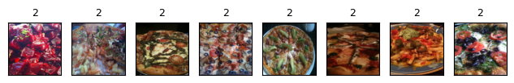
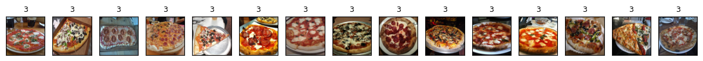
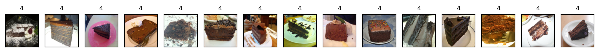
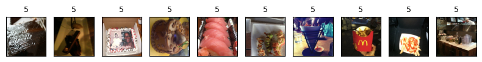
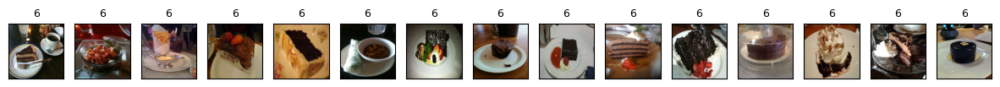
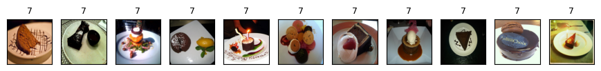
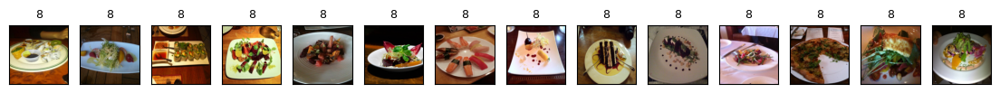
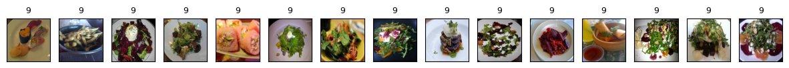
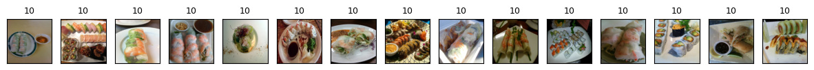
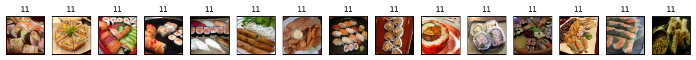
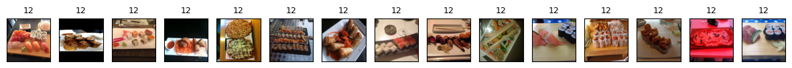
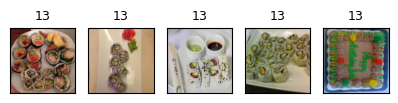
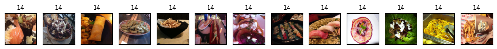
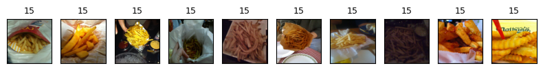
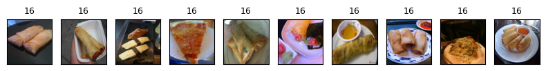
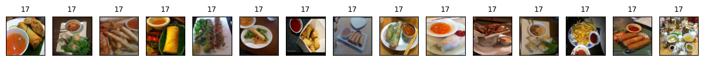
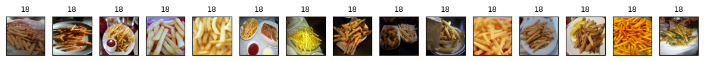
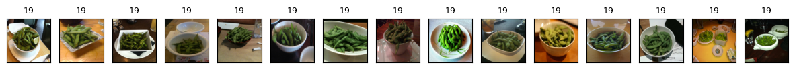
Some clusters correspond to people with distinct faces, age, facial expressions, hair colour and hair style, lighting and skin tone.